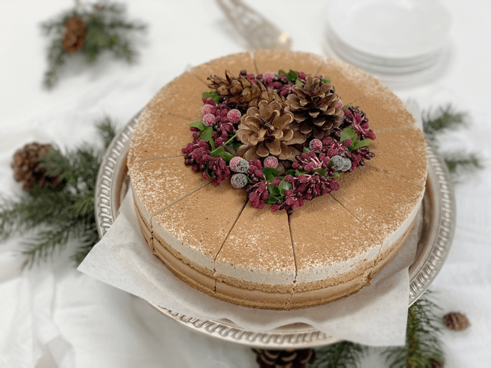
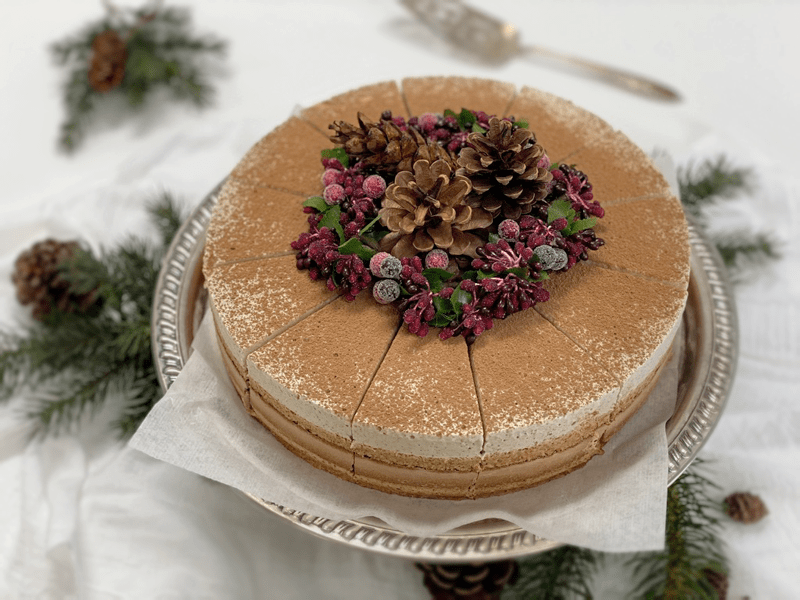
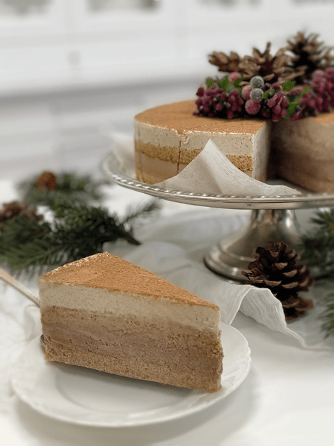

Tiramisu – using Irish Moss
raw / vegan / gluten-free / grain-free
Tiramisu is a timeless Italian dessert. They say that if it is done correctly, it can be transcendent. Not only will this dessert swoon you, but by the time you make this dessert, you will be well educated on making your own nut milk, coconut cream, date paste, and Irish moss paste.

The best advice I can give is to first read through the recipe and instructions carefully before you start, this will help you be better prepared. Also, make the components, such as almond milk and date paste, etc., before you begin to assemble the cake. Clicks on the links in each paragraph for instructions on how to make each component.
To get nut pulp, you have to make nut milk. You won’t be using the nut milk in the recipe, just the pulp. Place the nut milk in a mason jar and store it in the fridge. Nut milks are lovely for breakfast to add to your cereals, smoothie, or just to drink! Set the nut pulp aside.
Date paste is another great staple to have on hand, so don’t worry about making the exact measurement that is required for the recipe. Make extra! Add a dollop on top of your yogurt, add to a smoothie, dip your finger in it, spread it on raw bread, and so much more!
Coconut cream is another luxurious food using Young Thai Coconuts. Please read the post I did about The Inside Scoop of Young Thai Coconuts. I always love having extra on hand. Keep it creamy or add a bit more water and drink it straight. Heaven! If you don’t have the resources to obtain fresh Young Thai coconut, you can use canned full-fat coconut milk.

You can use cold-pressed coffee or espresso coffee. Either one will work fine. I love to make a large jar of the cold-pressed version and keep it in the fridge. You can find the recipe HERE. It is more like a concentrate, and you can customize every mug that you drink. For this recipe, I used straight concentrate.
Irish Moss plays a significant role in this cake. It gives the chocolate and vanilla mousse the body needed to hold their shape. Recently some controversial information has made its way through the Internet. I have read from many resources the concerns of using and inversely the fantastic health benefits of Irish moss. If you are concerned about this ingredient, I ask that you do your own research and draw your own conclusions. Personally, I don’t have an issue with it. If you don’t wish to use it or you have a hard time finding this ingredient. Here is a version of this dessert made with agar instead of Irish moss.
Ingredients:
Yields an 8×8 pan
Cake Ingredients:
Chocolate Mousse Layer:
- 2 cups (440 g) thick coconut cream or canned
- 1 cup (222 g) cold espresso coffee
- 1/2 cup (150 g) maple syrup
- 1 tsp (5 g) vanilla extract
- 1/4 tsp (2 g) Himalayan pink salt
- 1/4 cup (25 g) raw cacao powder
- 1/2 cup (105 g) raw coconut oil, warmed to liquid
- 1 1/2 Tbsp lecithin powder or 1 1/2 Tbsp (18 g) white chia seeds, ground
- 1/4 cup (60 g) Irish Moss gel
Vanilla Mousse Layer:
- 2 cups thick coconut cream or canned
- 1/2 cup (150 g) maple syrup
- 1/4 cup water
- 1 Tbsp (15 g) vanilla extract
- 1/4 tsp (2 g) Himalayan pink salt
- 1/2 cup raw coconut oil, warmed to liquid
- 1 1/2 Tbsp lecithin powder (optional)
- 1/4 cup Irish Moss gel
Topping:
- A dusting of cacao powder
- 1 Green and Blacks Espresso Chocolate Bar, shaved into curls (optional)
Preparation:
To Make the Cake:
- Place the date paste, espresso, coconut oil, vanilla, and salt in a food processor and process till creamy.
- Slowly add the almond pulp and process for several minutes until it becomes light and fluffy. Stop and scrape the sides down if needed.
- Spread (roughly 2 cups / 600 g) of the cake batter evenly on the bottom of an 8 x 8-inch square springform pan.
- Chill while making the chocolate mousse. Cover and refrigerate the remainder of the cake batter until ready to use.
To Make the Chocolate Mousse:
- In the blender, combine the coconut cream, Irish moss, espresso coffee, maple syrup, vanilla, salt, and cacao powder. Blend until smooth.
- With the blender running and with the vortex created, add the lecithin and coconut oil and blend until smooth.
- Pour the chocolate mousse evenly over the top of the cake and chill for approximately 2-4 hours, or until firm.
- Carefully spread the remainder of the cake mixture over the top of the firm chocolate mousse.
- Place in the freezer long enough for the mousse to firm up. It needs to be firm enough to handle the pressure of laying the next cake layer on top of it.
To Make the Vanilla Mousse:
- Place the coconut cream, Irish moss, maple syrup, water, vanilla, and salt in the blender and blend to a smooth cream.
- Add lecithin and coconut oil and blend until smooth.
- Pour the vanilla mousse evenly over the top of the cake and place it in the freezer until firm. When ready to serve, allow it to soften at room temp for 1-2 hours.
- Dust with cocoa powder and decorate with chocolate curls.
- If you wish to step by step photos on how to put the cake together click (here) and scroll the bottom of the post. The pan shape is different but the steps are the same.

© AmieSue.com